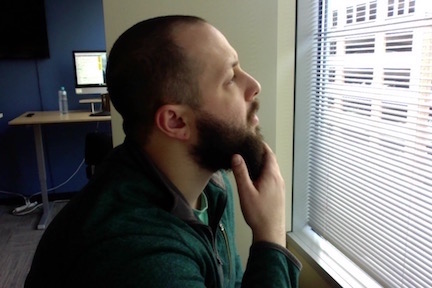

Welcome to me! Riley Watts!
These are some of the projects I have had the pleasure to work on during my first week here at Epicodus
This is one of the first webpages we designed. We started with basic html, eventually added css styling, and learned the importance of README.md's
This project was where we first learned how to link to seperate html pages inside our own directories, as well as how to add and link images to our index page.
This project helped us solidify linking htmls in our home directories and practice the funcionality of branches.>/p>
This project taught us how to use floats and divs to create columns, sidebars, or anything that you might want to group seperate from other page content.
This was by far the most challenging and rewarding project we worked on this week. We were tasked with rebuilding a wiki page from scratch, matching the formatting with bootstrap and css elements.
I graduated highschool in 2010 and went on to complete 3 years of college before I realized my inability to commit to something at that time. I started at Oregon State University for my freshman year, then transferred to University of Oregon for the next two.
During the summer of 2011, I went on a 30 day backpacking expedition through the NOLS program, standing for National Outdoor Leadership School. We hiked 180 miles across Washington state, venturing into the Pasaytan Wilderness and even into parts of Canada when we were straddling the border. I was able to experience complete one-ness with nature as a result of having no electronic ammenities and a distinct focus on "Leave No Trace" environmental principles.
Up until around 2014, I mainly worked seasonal jobs and summers due to being a full-time student. I worked as a(n)
- pumpkin patch tour director
- assisted living care-taker
- math tutor
- Street of Dreams tour guide
Then I decided to enlist in a federal program called Americorps NCCC. I spent 10 months in the deep south living, and essentially volunteering (we were given 120$ every 2 weeks), with 7 other people between the ages of 18-24. We spent every waking moment together: moving around between makeshift living spaces in our 15 passenger van. We worked with organizations such as
- Habitat for Humanity
- The Salvation Army
- The Girlscouts of America
- and many others
We travelled from our home-base in Vicksburg, Mississippi to various project sites in Alabama, Georgia, North Carolina, Louisianna, Tennesse, and others. Generally we spent around 5 weeks at each project site.
I spent the past 8 months working retail for a company I love, called Orchard Supply Hardware. The employees of this store are second to none and quickly became a home away from home for me.
Hobbies
Video-games
I have grown up with a love for video games. I started out playing Battle Toads on the Super Nintendo when I was in daycare and haven't shyed away since. My favorite games would have to be
- Overwatch (for pc)
- League of Legends
- World of Warcraft
- Dark Souls (ps4)
- The Talos Principle
- Hearthstone
Tv and Movies
As I've gotten older I've learned to appreciate certain aspects of TV and movies in different light. I definitely wouldn't consider myself a critic of any sort because I am unable to subject myself to certain genres, like Horror, or even just shows and movies that are based in content I don't find compelling.
Interests
I am a wildly musical person. I really really really enjoy singing, mostly to myself, but sometimes outloud when I am happy enough. (Hopefully you won't be subjected to such foulness).